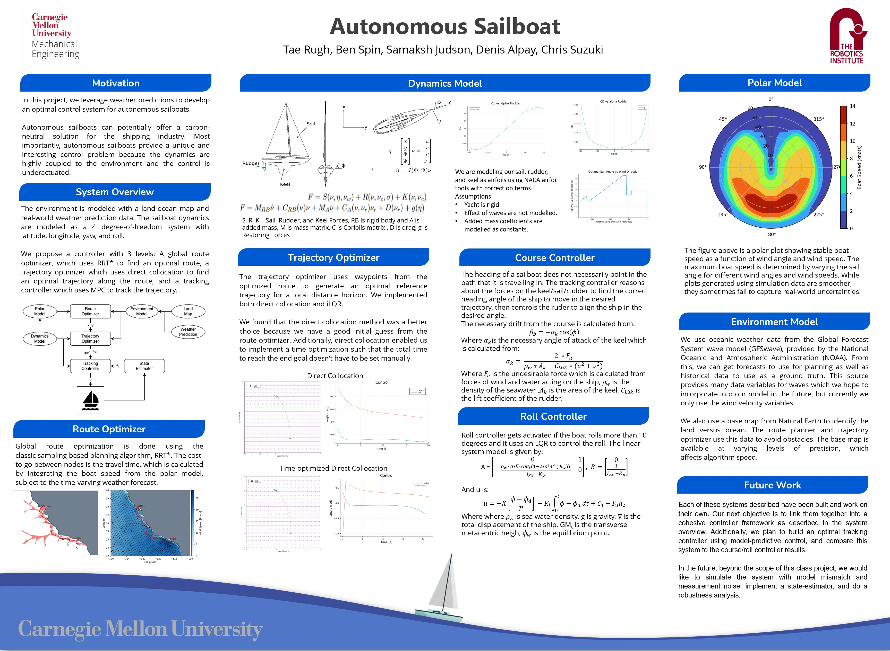
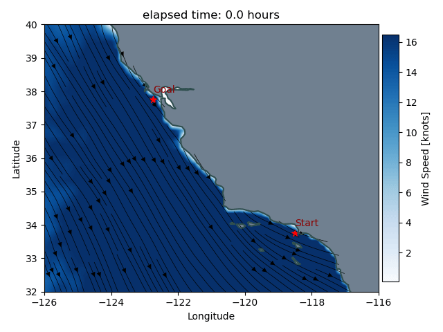

Optimal Control of an Autonomous Sailboat
I developed a multi-level control system for an autonomous sailboat. The control system integrated multiple advanced optimization techniques to improve the sailboat's navigation and control in real-world conditions.
Poster
- Route Optimization (RRT*): I implemented a global route optimization algorithm, known as Rapidly-exploring Random Trees (RRT*), which helps the sailboat find the most efficient path to its destination while avoiding obstacles in the environment.
- Trajectory Optimization and Model Predictive Control (MPC): After determining the global route, I used trajectory optimization and MPC to refine the sailboat's movements, reducing its navigation error by 15%. MPC continuously updated the sailboat's path based on current data, ensuring smooth, real-time adjustments to the environment.
- Improving Accuracy: By using data from the National Oceanic and Atmospheric Administration (NOAA), I tested the system in a real-world scenario and improved the sailboat's accuracy by 20%.
- Comparison of Techniques: I also compared two optimization methods, direct collocation and iLQR (Iterative Linear Quadratic Regulator), to ensure that the system achieved both accuracy and efficient computation time.
Los Angeles to San Francisco
San Francisco to Los Angeles

This is what the entire model looks like upon deployment.